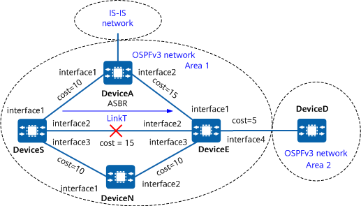

Example for Configuring OSPFv3 IP FRR
Networking Requirements
If a fault occurs on a network, OSPFv3 IP FRR can rapidly switch traffic to the backup link without waiting for route convergence, ensuring uninterrupted traffic transmission.
- OSPFv3 runs on all devices.
- The link costs meet the OSPFv3 IP FRR inequality.
If the primary link (link T) fails, DeviceS immediately switches traffic to the backup link, which passes through DeviceN.
- Based on the network planning, the link that passes through DeviceA does not function as an FRR backup link.

In this example, interface 1, interface 2, interface 3, and interface 4 represent 10GE0/0/1, 10GE0/0/2, 10GE0/0/3, and 10GE0/0/4, respectively.

Device |
Router ID |
Interface |
IPv6 Address |
|---|---|---|---|
DeviceS |
1.1.1.1 |
10GE0/0/1 |
2001:DB8:1000::1/96 |
10GE0/0/2 |
2001:DB8:1001::1/96 |
||
10GE0/0/3 |
2001:DB8:1002::1/96 |
||
DeviceA |
2.2.2.2 |
10GE0/0/1 |
2001:DB8:1000::2/96 |
10GE0/0/2 |
2001:DB8:2000::2/96 |
||
DeviceN |
3.3.3.3 |
10GE0/0/1 |
2001:DB8:1002::2/96 |
10GE0/0/2 |
2001:DB8:2002::2/96 |
||
DeviceE |
4.4.4.4 |
10GE0/0/1 |
2001:DB8:2000::1/96 |
10GE0/0/2 |
2001:DB8:2001::1/96 |
||
10GE0/0/3 |
2001:DB8:2002::1/96 |
||
10GE0/0/4 |
2001:DB8:3000::1/96 |
Context
Note the following during the configuration:
Before configuring OSPFv3 IP FRR, block FRR on certain interfaces to prevent the links connected to these interfaces from functioning as backup links. This prevents the links connected to these interfaces from being calculated as backup links during FRR calculation.
When OSPFv3 IP FRR is configured, the underlying layer must be able to quickly respond to link changes so that traffic can be quickly switched to the backup link. After the bfd all-interfaces frr-binding command is run, the BFD session status is bound to the link status of the interface (when the BFD session goes down, the link status of the interface also goes down). In this manner, faults can be rapidly detected.
Precautions
To improve security, you are advised to deploy OSPFv3 authentication. For details, see "Configuring OSPFv3 Authentication." OSPFv3 area authentication is used as an example. For details, see "Example for Configuring Basic OSPFv3 Functions."
Configuration Roadmap
Configure basic OSPFv3 functions on each device involved. (For detailed configurations, see Example for Configuring Basic OSPFv3 Functions.)
Configure BFD for OSPFv3 on all the devices in area 0.
Set link costs to ensure that link T is preferentially selected to transmit traffic.
Disable FRR on a specified interface of DeviceS.
- Enable OSPFv3 IP FRR on DeviceS to protect the traffic it forwards.
Procedure
- Assign an IPv6 address to each interface involved. For detailed configurations, see Configuration Scripts.
- Configure basic OSPFv3 functions. For detailed configurations, see Example for Configuring Basic OSPFv3 Functions.
- Configure BFD for OSPFv3 on all the devices in area 0. For detailed configurations, see Example for Configuring BFD for OSPFv3.
- Set link costs to ensure that link T is preferentially selected to transmit traffic.
# Configure DeviceS.
[DeviceS] interface 10ge0/0/1 [DeviceS-10GE0/0/1] ospfv3 cost 5 [DeviceS-10GE0/0/1] quit [DeviceS] interface 10ge0/0/2 [DeviceS-10GE0/0/2] ospfv3 cost 20 [DeviceS-10GE0/0/2] quit [DeviceS] interface 10ge0/0/3 [DeviceS-10GE0/0/3] ospfv3 cost 10 [DeviceS-10GE0/0/3] quit
# Configure DeviceA.
[DeviceA] interface 10ge0/0/1 [DeviceA-10GE0/0/1] ospfv3 cost 5 [DeviceA-10GE0/0/1] quit [DeviceA] interface 10ge0/0/2 [DeviceA-10GE0/0/2] ospfv3 cost 5 [DeviceA-10GE0/0/2] quit
# Configure DeviceN.
[DeviceN] interface 10ge0/0/1 [DeviceN-10GE0/0/1] ospfv3 cost 10 [DeviceN-10GE0/0/1] quit [DeviceN] interface 10ge0/0/2 [DeviceN-10GE0/0/2] ospfv3 cost 10 [DeviceN-10GE0/0/2] quit
- Disable FRR on a specified interface of DeviceS.
[DeviceS] interface 10ge0/0/1 [DeviceS-10GE0/0/1] ospfv3 frr block [DeviceS-10GE0/0/1] quit
- Enable OSPFv3 IP FRR on DeviceS.
[DeviceS] ospfv3 [DeviceS-ospfv3-1] frr [DeviceS-ospfv3-1-frr] loop-free-alternate [DeviceS-ospfv3-1-frr] quit [DeviceS-ospfv3-1] quit
Verifying the Configuration
# Run the display ospfv3 routing command on DeviceS to check the routing information.
[DeviceS] display ospfv3 routing 2001:db8:3000::1 96
Codes : E2 - Type 2 External, E1 - Type 1 External, IA - Inter-Area
OSPFv3 Process (1)
Destination Metric
Nexthop
2001:DB8:2000:1::/64 3124
via 2001:DB8:2001::1/96, 10GE0/0/2 backup via FE80::2000:10FF:4, 10GE0/0/3, LFA LINK-NODE
Priority :Low
The command output shows that a backup link has been generated through FRR calculation on DeviceS.
Configuration Scripts
DeviceS
# sysname DeviceS # bfd # interface 10GE0/0/1 ipv6 enable ipv6 address 2001:db8:1000::1/96 ospfv3 1 area 0.0.0.1 ospfv3 cost 5 # interface 10GE0/0/2 ipv6 enable ipv6 address 2001:db8:1001::1/96 ospfv3 1 area 0.0.0.1 ospfv3 cost 15 # interface 10GE0/0/3 ipv6 enable ipv6 address 2001:db8:1002::1/96 ospfv3 1 area 0.0.0.1 ospfv3 frr block ospfv3 cost 10 # ospfv3 1 router-id 1.1.1.1 bfd all-interfaces enable bfd all-interfaces frr-binding frr loop-free-alternate area 0.0.0.1 # return
DeviceA
# sysname DeviceA # bfd # interface 10GE0/0/1 ipv6 enable ipv6 address 2001:db8:1000::2/96 ospfv3 1 area 0.0.0.1 ospfv3 cost 5 # interface 10GE0/0/2 ipv6 enable ipv6 address 2001:db8:2000::2/96 ospfv3 1 area 0.0.0.1 ospfv3 cost 5 # ospfv3 1 router-id 2.2.2.2 bfd all-interfaces enable bfd all-interfaces frr-binding frr loop-free-alternate area 0.0.0.1 # return
DeviceN
# sysname DeviceN # bfd # interface 10GE0/0/1 ipv6 enable ipv6 address 2001:db8:1002::2/96 ospfv3 1 area 0.0.0.1 ospfv3 cost 10 # interface 10GE0/0/2 ipv6 enable ipv6 address 2001:db8:2002::2/96 ospfv3 1 area 0.0.0.1 ospfv3 cost 10 # ospfv3 1 router-id 3.3.3.3 bfd all-interfaces enable bfd all-interfaces frr-binding frr area 0.0.0.1 # return
DeviceE
# sysname DeviceE # bfd # interface 10GE0/0/1 ipv6 enable ipv6 address 2001:db8:2000::1/96 ospfv3 1 area 0.0.0.1 # interface 10GE0/0/2 ipv6 enable ipv6 address 2001:db8:2001::1/96 ospfv3 1 area 0.0.0.1 # interface 10GE0/0/3 ipv6 enable ipv6 address 2001:db8:2002::1/96 ospfv3 1 area 0.0.0.1 # interface 10GE0/0/4 ipv6 enable ipv6 address 2001:db8:3000::1/96 ospfv3 1 area 0.0.0.1 ospfv3 cost 5 # ospfv3 1 router-id 4.4.4.4 bfd all-interfaces enable bfd all-interfaces frr-binding area 0.0.0.1 # return